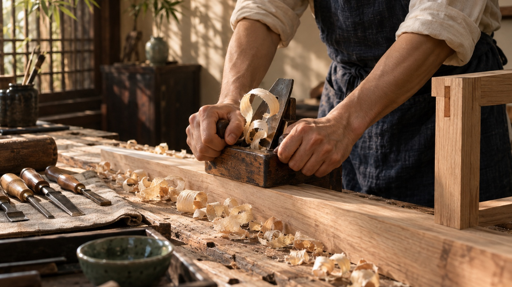
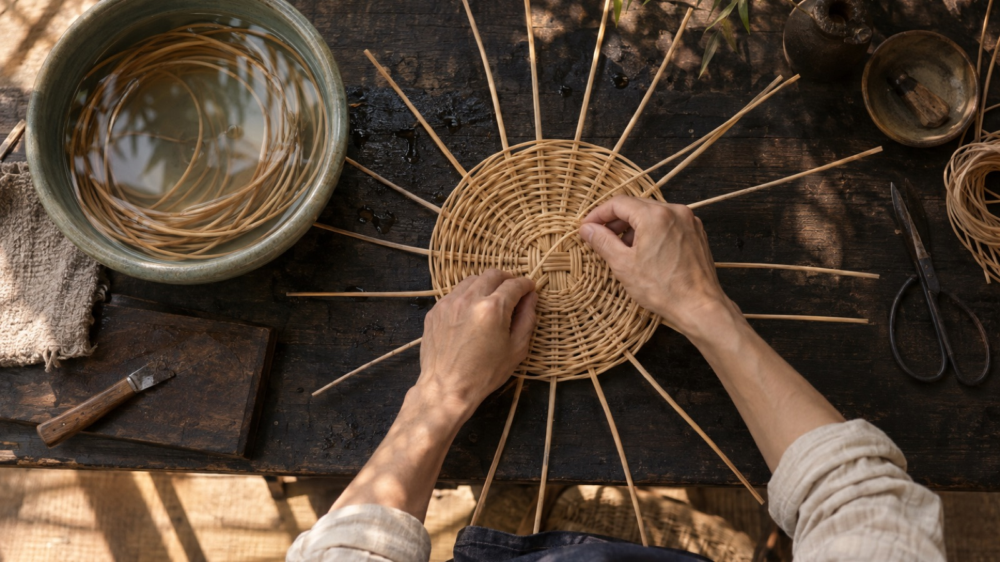
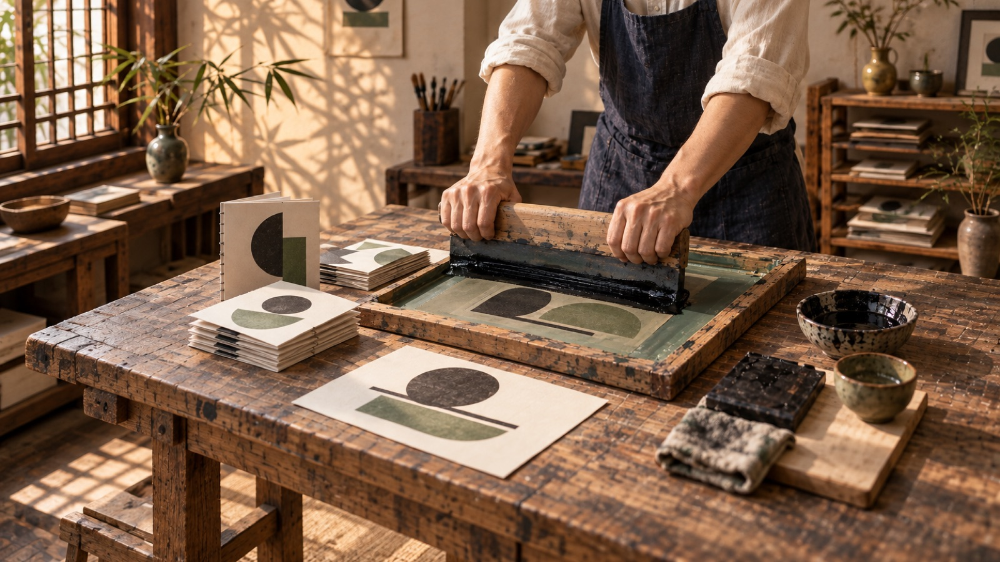

總長4 小時 20 分
總長4 小時 20 分
從零開始的手捏陶｜做出第一只日用食器
不需要拉坏機，也不需要工作室。從揉土排氣、手捏成形到修坯與上釉，全程以家中餐桌就能進行的方式拍攝。課程刻意保留了兩次失敗示範，讓你知道裂開、變形時該怎麼救，最後完成一只真正能進微波爐的日用食器。
講師林子謙深坑／窯場十二年
NT$ 2,480
免費試看都含免費試看章節，先看前三支，再決定要不要動手。
總長4 小時 20 分
不需要拉坏機，也不需要工作室。從揉土排氣、手捏成形到修坯與上釉，全程以家中餐桌就能進行的方式拍攝。課程刻意保留了兩次失敗示範，讓你知道裂開、變形時該怎麼救，最後完成一只真正能進微波爐的日用食器。
講師林子謙深坑／窯場十二年
NT$ 2,480
免費試看 總長3 小時 05 分
總長3 小時 05 分
以義大利植鞣革為材，從裁切、削薄、打斬到菱錐手縫，一刀一針完整示範。特別以多機位特寫拍攝手縫角度與拉線力道這類「看文字學不會」的細節，完課後你會擁有一只會隨時間養出色澤的卡夾。
講師吳沛慈手縫皮件職人
NT$ 1,980
免費試看
總長5 小時 40 分全程只用手工具，不吵不髒，租屋處陽台也能做。從選材、鋸切、鑿榫到塗裝，完整走過一次木工的基本功，並用大量慢動作拆解刨刀與鑿刀的角度。結業作品是一張可承重的實木床邊小几。
講師陳敬堯木作工坊主理人
NT$ 3,280
免費試看用洋蔥皮、茜草與藍靛等生活中取得的材料，煮出屬於自己的顏色。課程涵蓋媒染劑比例、綁紮技法與基礎刺繡針法，並附上可下載的配色對照表，讓你把一件素色棉T變成獨一無二的作品。
講師黃柏安植物染工作室
NT$ 2,280
免費試看 總長2 小時 50 分
總長2 小時 50 分
以最小工具組起步，帶你認識退火、鍛敲、銲接與拋光四個核心步驟。每個步驟都附上「失敗長什麼樣」的對照畫面，降低新手對火與金屬的恐懼，完課後能做出一只可日常配戴的素面銀戒。
講師蘇語彤金工創作者
NT$ 2,180
免費試看 總長2 小時 15 分
總長2 小時 15 分
從大豆蠟與蜂蠟的特性講起，教你看懂前中後調的比例結構，並實作三款經典香氣配方。課程附贈可下載的調香紀錄表，讓每一次微調都能被記錄下來，逐步找到專屬於你家的味道。
講師鄭亦寧調香師
NT$ 1,680
免費試看
總長2 小時 00 分專為零基礎設計的編織入門。從泡藤、起底到收邊，以俯視定機位全程拍攝，手指怎麼走線看得一清二楚。課程節奏刻意放慢，適合當成週末的放鬆活動，一個下午就能完成一個能用的桌上收納籃。
講師李映蓉編織手作講師
NT$ 1,480
免費試看
總長4 小時 05 分結合絹印製版與手工裝幀，從曬版、刮印到對摺騎馬釘，完整走過一本小誌的誕生流程。課程包含套色對位與常見糊版問題的排解示範，最後你會印出一本可以送人、也可以寄賣的獨立刊物。
講師周彥廷獨立出版工作室
NT$ 2,880
免費試看設計稿狀態示意
選了「蠟燭香氛＋進階＋NT$ 3,000 以上」：已選條件變成可移除的標籤，結果數變成 0，課程網格換成空狀態。
這個條件下目前沒有課程，試著放寬難度或價格範圍。